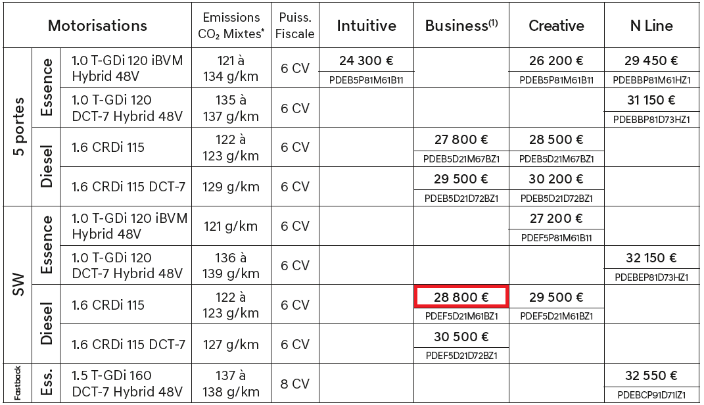
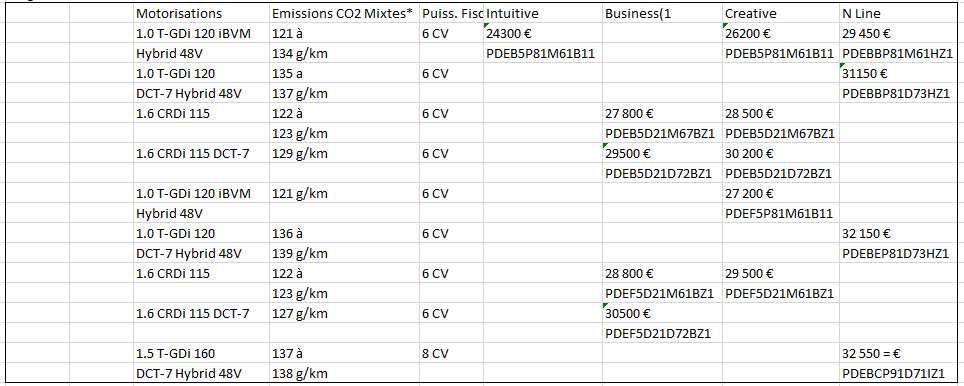
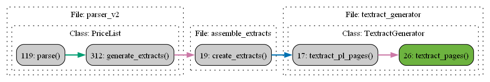
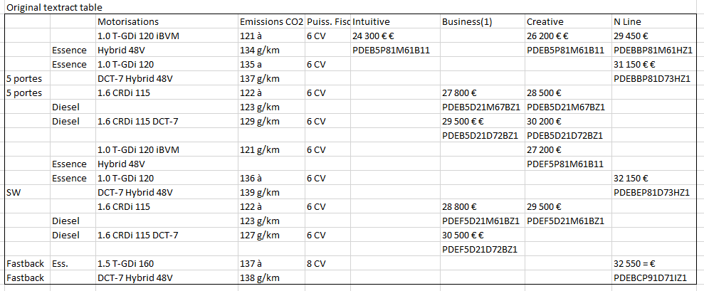

Structuring the PDF
While we could open the PDF and extract all its text, parsing complex tabular data from from text can be challenging. A better approach is to use a library that directly extracts tables from the PDF. We experimented with open-source options but ultimately opted for Amazon Textract in conjunction with Adobe Extract.
To continue the example: in the previous step we found a page classified as “price-list” containing only one table.
{kind=link}
Textract
Textract is using OCR to read the page and then has some internal logic to group words into lines, cells into rows and rows into tables. Its output is relatively complex and might look something like:
...
{
'BlockType': 'LINE',
'Confidence': 98.21517944335938,
'Text': 'PDEB5D21M67BZ1',
'Geometry': {
'BoundingBox': {
'Width': 0.05293244868516922,
'Height': 0.007043752353638411,
'Left': 0.3939276337623596,
'Top': 0.30503466725349426
},
'Polygon': [
{
'X': 0.3939276337623596,
'Y': 0.30503466725349426
},
{
'X': 0.44686007499694824,
'Y': 0.30503466725349426
},
{
'X': 0.44686007499694824,
'Y': 0.31207841634750366
},
{
'X': 0.3939276337623596,
'Y': 0.31207841634750366
}
]
},
'Id': '434b6051-ed59-46a5-b69f-a28e6d6d860a',
'Relationships': [
{
'Type': 'CHILD',
'Ids': [
'af1d52fd-0893-48e8-85a0-064eb1317e68'
]
}
],
'Page': 26
},
...
To better visualize what is going on, we have drawn the table in excel.
{kind=link}
Hashing results
Code flow
{kind=link}
Adobe
But hey! The Textract image is wrong!? Where are model names? Where is fuel?
It turns out, that Textract comes with a few limitations. One of them is its inability to parse upside-down text. In such cases we can activate Adobe Extract and then combine the results.
Adobe Extract works in a foundamentally different way. It does not have an OCR, but reads the PDF structure directly from the PDF file. This comes with its own set of strengths and weaknesses – hence why we combine the results!
In our example, the combined results would look like the table below. You might note that cells are still not correctly merged, and some entries duplicate. But all the information is there and there will be ample opportunity for error corrections before the pipeline is over.
{kind=link}
{kind=link}